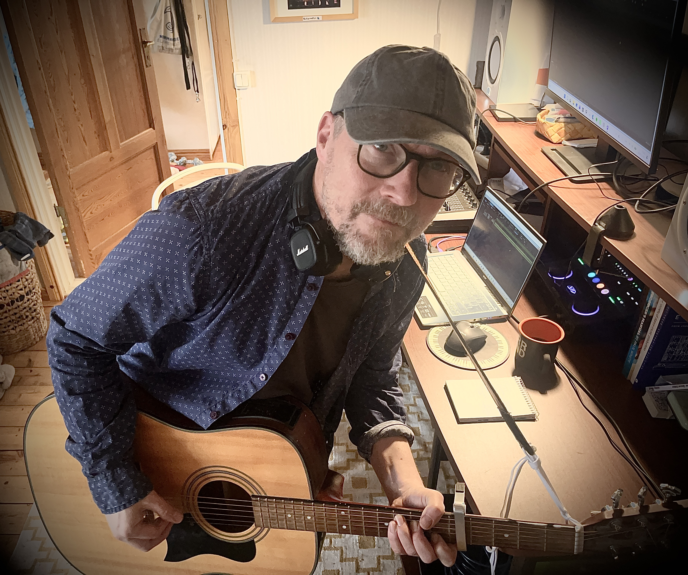
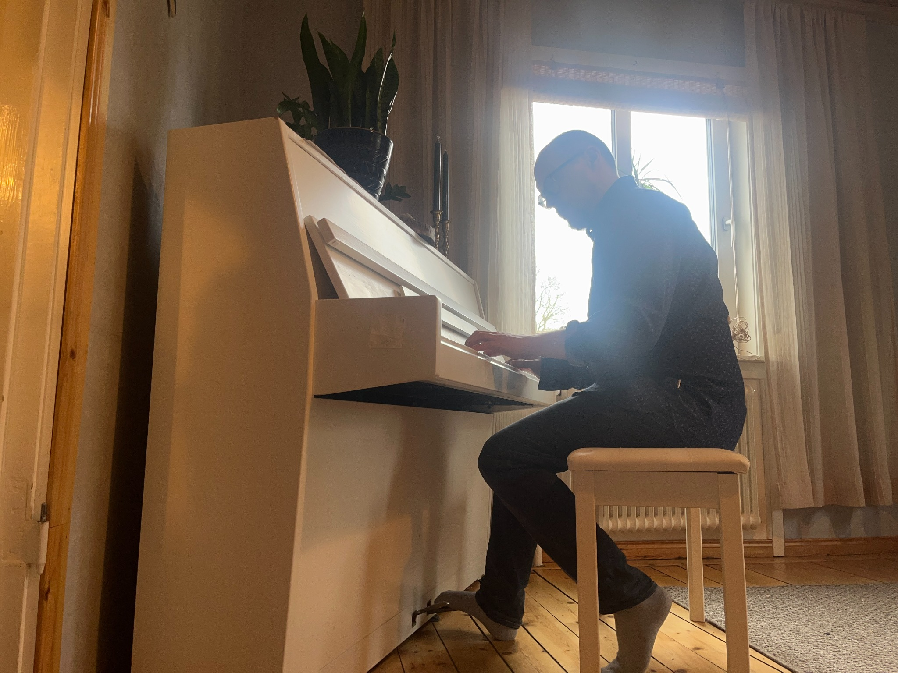

Music / memories / what comes next
Hasse
Kangas.
New music.
Earlier chapters.
One ongoing journey.

01 / Music
A new chapter
Forthcoming single
In Late
July.
New music from Hasse Kangas.
A new chapter is taking shape.
02 / The Journey
Then. Now. Next.Different bands.
Different chapters.
Still making music.
Hasse Kangas
Personal songwriting at the crossroads of folk rock, pop and electronic soundscapes.
Hasse Kangas is a singer, musician and songwriter whose musical background spans folk rock and alternative rock, pop, punk and the singer-songwriter tradition.
Following his years with Pello Revolvers and Hasse K & the Cripples, he is now continuing to make music under his own name. In many ways, the new solo project grows directly out of the songwriting that shaped his earlier bands: personal lyrics, melodic storytelling and a desire to move freely between different forms of musical expression.
At the same time, the solo project takes his music in a new direction. Where the earlier bands often had a distinctly guitar-driven sound, the piano now plays a more prominent role. Traditional instruments are combined with programmed rhythms, synthesizers and electronic arrangements.
The music still inhabits the space between folk rock, pop, singer-songwriter and alternative music, with recurring touches of punk’s directness and the atmosphere of new wave.
Continuity and change sit side by side. The songs retain the personal character of his earlier work while taking on new forms through a freer, more independent approach to arranging and producing.
The forthcoming single In Late July opens a new chapter in Hasse Kangas’s musical story — one that remains closely connected to everything that came before.
Explore the archive03 / Archive
From the collectionEarlier chapters.
A—01Pello Revolvers
2001–2007
From the Torne Valley to the indie clubs of Stockholm and Uppsala.
Pello Revolvers formed in the early 2000s when Hasse Kangas, David Nygård and Markus Krunegård came together during a Walpurgis Night celebration in Uppsala. Their music became an idiosyncratic blend of folk rock, pop, punk and what the members themselves called “fake reggae”.
The name reflected the band’s musical identity. Pello referred to the village in the Torne Valley and the members’ northern Swedish roots. Most came from Kiruna and had ties to the Torne Valley. Revolvers represented the other side of their music: a more electric, spirited sound influenced by punk, new wave and reggae.
Their first demo, Gottsunda Tejp, was recorded in David Nygård’s kitchen in 2001. Experimentation and ingenuity shaped the sessions, with kitchen utensils among the objects pressed into service as percussion instruments.
After Johan Sammelin and Tobias Dahlström (then known as Henriksson) joined, the band recorded the EPs Pello (2003) and Borg Mesch EP (2004). Their music also attracted attention abroad, earning demo-of-the-week selections on several music websites and airplay from DJs and radio stations in countries including Italy, Spain and Brazil.
During their active years, Pello Revolvers played venues and indie clubs across Stockholm and Uppsala.
As Markus Krunegård’s commitments to Laakso and his developing music career took up more of his time, he left the band. Ralf Rotmalm joined on bass ahead of No Spare Tyres (2005), and Anna Edemo later joined on violin and backing vocals.
Two further EPs followed: Harmless Dynamite (2006), featuring Robert Arlinder on bass and guitar, and Hasse K EP (2007). Harmless Dynamite remains unreleased.
Hasse Kangas wrote the words and music for every song and was the band’s lead singer and guitarist. Arrangements, however, were developed collectively, with the members’ different musical backgrounds and instruments contributing to the band’s distinctive sound.
Pello Revolvers effectively ceased to be an active band around 2007. Hasse continued writing on his own. Many songs from the years that followed remain unreleased, and some are now being considered for recording.
Bringing together northern roots and storytelling traditions with the energy of the urban indie scene, Pello Revolvers bridged folk and electric sounds, the Torne Valley and the city. They remain an important chapter in a musical story that is still unfolding.
Members & instrumentation
- Hasse Kangas — lead vocals, acoustic and electric guitar; words and music.
- David Nygård — accordion, trombone, synthesizer, drums and backing vocals.
- Markus Krunegård — bass guitar, electric guitar and backing vocals.
- Johan Sammelin — electric guitar, synthesizer and backing vocals; producer.
- Tobias Dahlström (formerly Henriksson) — drums, percussion, mandolin and backing vocals.
- Ralf Rotmalm — bass guitar.
- Anna Edemo — violin and backing vocals.
- Robert Arlinder — bass guitar, electric guitar and backing vocals.
Discography
| Year | Title | Format |
|---|---|---|
| 2001 | Gottsunda Tejp | Demo |
| 2003 | Pello | EP |
| 2004 | Borg Mesch EP | EP |
| 2005 | No Spare Tyres | EP |
| 2006 | Harmless Dynamite | Unreleased EP |
| 2007 | Hasse K EP | EP |
A—02Hasse K & the Cripples
2012–2014
Folk rock, alternative rock and personal songwriting.
Hasse K & the Cripples formed in 2012, bringing singer, guitarist and songwriter Hasse Kangas together with musicians he had previously played with in Kiruna during the 1990s.
The band was a new project in its own right, yet its music bore clear traces of Kangas’s earlier musical experiences. It brought together the folk rock influences of Crossbone, the rock and singer-songwriter traditions of Rustless, and the more idiosyncratic sound of Pello Revolvers.
The thread running through these projects was Hasse Kangas’s personal approach to songwriting. Writing both words and music, he combined melody and storytelling with influences drawn from a range of musical traditions.
Between 2012 and 2014, Hasse K & the Cripples recorded EP 2013 and played a handful of live shows. The band became a brief but significant chapter in Hasse Kangas’s musical history, renewing earlier collaborations in a new musical setting.
Members & instrumentation
- Hasse Kangas — vocals and guitar; words and music.
- Richard Niemi — drums and percussion.
- Andreas Gunillasson — keyboards and synthesizer.
- Stefan Riekkola — bass guitar.
- Erik Nilsson — electric guitar.
Discography
| Year | Title | Format |
|---|---|---|
| 2013 | EP 2013 | EP |
04 / Gallery
Between the notesA moment,
held still.
At the piano.
In the studio.
05 / Contact
Let’s talk.
Music, collaborations or a simple hello.
manytracks@outlook.com